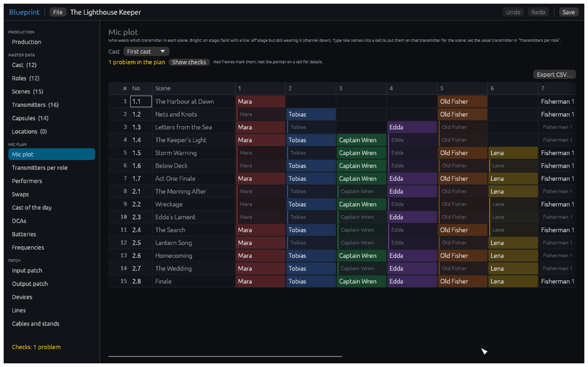
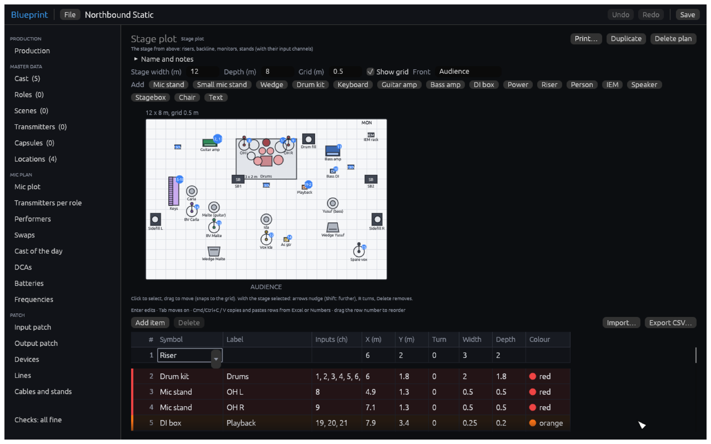

Blueprint
Plans for live shows, from one project file: mic plots for theatre and musicals, setlists, patch plans across several locations and more, everything printable as a clean PDF.
For macOS, Windows and Linux. Easiest with Showtime Suite, which also keeps it up to date.


What it does
One project per production
Cast, roles with their casting, scenes, transmitters and locations. Change a name in one place.
Tables like a spreadsheet
Keyboard first, several rows at once, drag to reorder, copy and paste with Excel or Numbers.
Mic plan
Scene × transmitter matrix, swaps, casts of the day, spares in one click, DCAs, batteries, frequencies and checks for every clash.
Setlists
A song library, breaks and encores, times of day, printed on one page as large as fits.
Patch
Devices, multicores and network lines, input and output patch with the whole signal path, cables and stands counted.
More plans
Stage plot from a symbol library, run of show, contacts, packing list, intercom plan and free tables.
Prints and exchange
PDFs with embedded fonts, revisions with change marks, CSV and spreadsheet import, an exchange file for Pulse and the other tools.